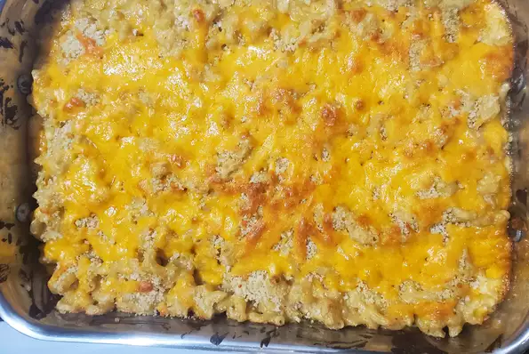

Mac and Cheese

Description
This is a simple and easy recipe yet it tastes so good. This recipe takes about 15 minutes of prep time and about 30-40
minutes for it to cook. This recipe contains 6 serving sizes.
Ingredients
- 1 (16 ounce) package elbow macaroni
- 1/4 cup butter
- 1/4 cup all-purpose flour
- 1/4 teaspoon dried thyme
- 1/4 teaspoon cayenne pepper
- 1/8 teaspoon white pepper
- 3 cups milk
- 1 pinch ground nutmeg
- 1/4 teaspoon worcestershire sauce
- 1 teaspoon salt
- 3 cups shredded sharp Cheddar cheese
- 1 teaspoon Dijon mustard
- 1/2 cup panko bread crumbs
- 1 tablespoon butter, melted
Steps
- Preheat oven to 400 degrees F (200 degrees C).
- Fill a large pot with lightly salted water and bring to a rolling boil over high heat. Once the water is boiling, stir
in the macaroni, and return to a boil. Cook the pasta uncovered, stirring occasionally, until the pasta is cooked through
but still slightly firm, about 8 minutes. Drain well.
- Melt 1/4 cup butter in a large saucepan over medium heat. When the butter starts to foam and bubble, stir in the flour;
cook on medium heat until flour just begins to turn pale yellow, 3 to 4 minutes. Add thyme, cayenne pepper, and white
pepper; cook and stir another minute, then whisk in 1 cup of milk until smooth. Pour in remaining milk and whisk again.
Bring the sauce just to a simmer.
- Stir in nutmeg, Worcestershire sauce, and salt; simmer on medium-low heat until thickened, about 8 minutes, whisking
often. Turn heat off, then add 2 1/4 cups of Cheddar cheese; stir until melted and combined. Add Dijon mustard.
- Transfer the macaroni into a casserole dish, then pour in the cheese sauce; stir to thoroughly combine sauce with pasta.
Mix panko bread crumbs and 1 tablespoon melted butter in a small bowl, and sprinkle crumbs on top of macaroni and cheese.
Sprinkle remaining 3/4 cup of Cheddar cheese on top.
- Bake in the preheated oven until bread crumbs and Cheddar cheese topping are golden brown, about 20 minutes.
Homepage